Bettors cut Russia escalation odds as Poland asks NATO to shoot down missiles: another invasion by 2027 9.5%, from 18.5% a week ago. Polymarket implied odds, hourly, 60 days, as Poland asks NATO to shoot down Russian missiles over Ukraine and Estonia readies a Dec 1 border closure. Source: https://polymarket.com/event/will-russia-invade-another-country-in-2026
Exploited-flaw alerts are running hot: November on pace for 36 CISA additions versus a 2025 average of 20. CISA KEV catalog additions by month; hatched bar projects November at its daily rate so far. Source: https://www.cisa.gov/known-exploited-vulnerabilities-catalog
The Sun runs far below forecast: October sunspots 46 versus NOAA's 83, yet fast solar wind may bring Thanksgiving auroras. NOAA SWPC observed and predicted solar cycle indices; the dashed line and band are NOAA projections, not observations. Source: https://services.swpc.noaa.gov/json/solar-cycle/observed-solar-cycle-indices.json
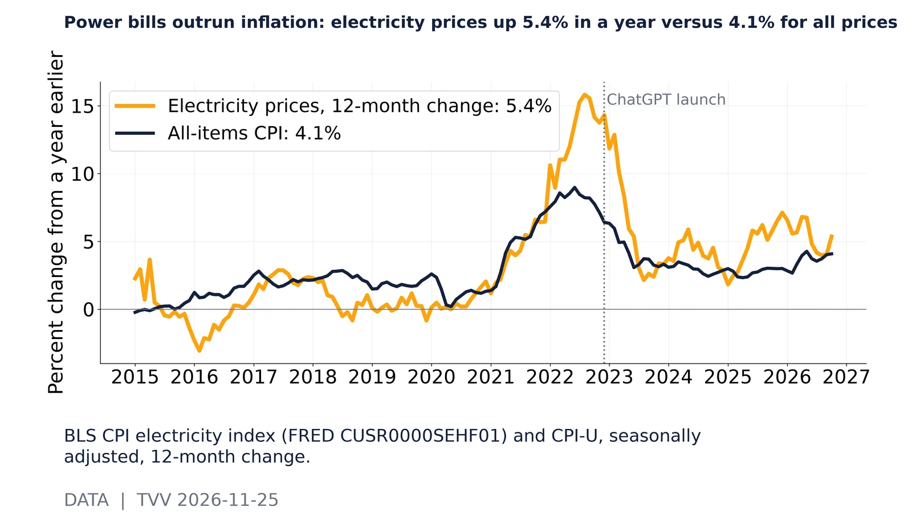
Power bills outrun inflation: electricity prices up 5.4% in a year versus 4.1% for all prices. BLS CPI electricity index (FRED CUSR0000SEHF01) and CPI-U, seasonally adjusted, 12-month change. Source: https://fred.stlouisfed.org/series/CUSR0000SEHF01
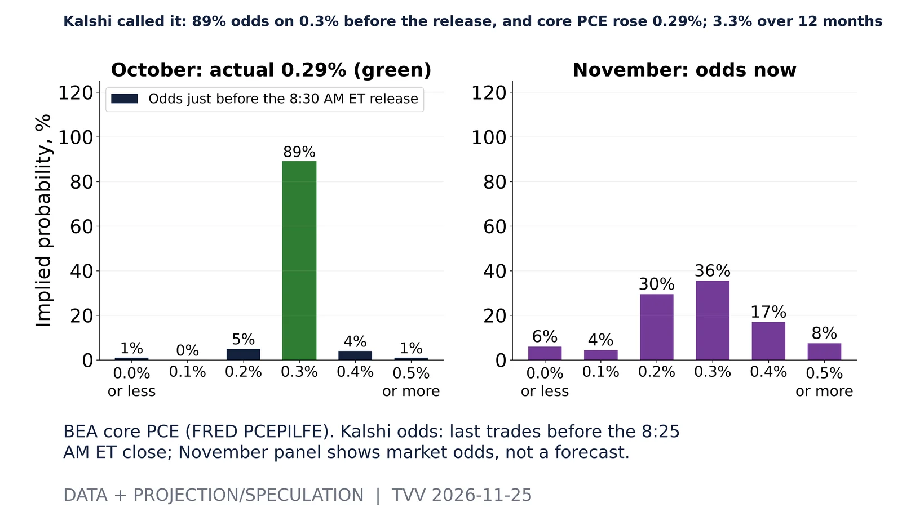
Kalshi called it: 89% odds on 0.3% before the release, and core PCE rose 0.29%; 3.3% over 12 months. BEA core PCE (FRED PCEPILFE). Kalshi odds: last trades before the 8:25 AM ET close; November panel shows market odds, not a forecast. Source: https://kalshi.com/markets/kxpcecore
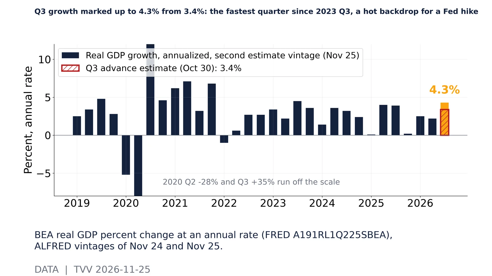
Q3 growth marked up to 4.3% from 3.4%: the fastest quarter since 2023 Q3, a hot backdrop for a Fed hike. BEA real GDP percent change at an annual rate (FRED A191RL1Q225SBEA), ALFRED vintages of Nov 24 and Nov 25. Source: https://alfred.stlouisfed.org/series?seid=A191RL1Q225SBEA
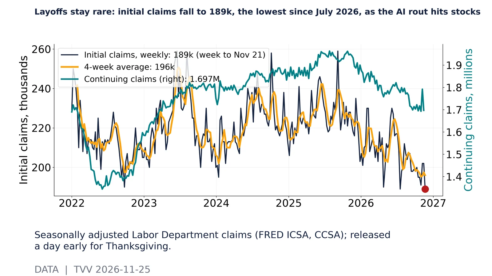
Layoffs stay rare: initial claims fall to 189k, the lowest since July 2026, as the AI rout hits stocks. Seasonally adjusted Labor Department claims (FRED ICSA, CCSA); released a day early for Thanksgiving. Source: https://fred.stlouisfed.org/series/ICSA
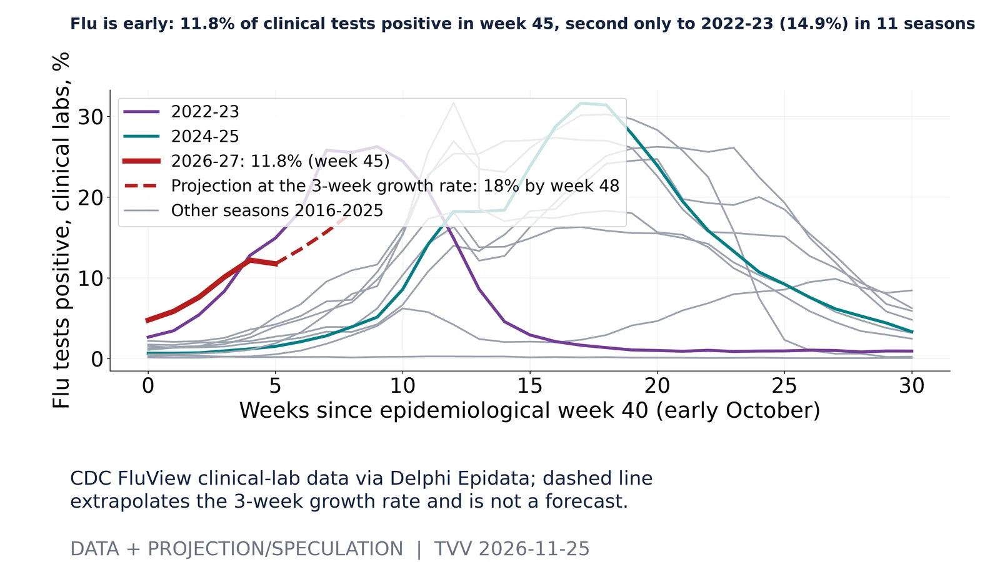
Flu is early: 11.8% of clinical tests positive in week 45, second only to 2022-23 (14.9%) in 11 seasons. CDC FluView clinical-lab data via Delphi Epidata; dashed line extrapolates the 3-week growth rate and is not a forecast. Source: https://www.cdc.gov/fluview/surveillance/
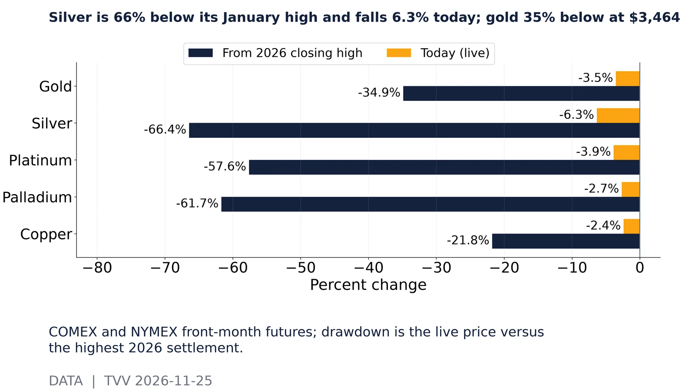
Silver is 66% below its January high and falls 6.3% today; gold 35% below at $3,464. COMEX and NYMEX front-month futures; drawdown is the live price versus the highest 2026 settlement. Source: https://finance.yahoo.com/quote/GC%3DF
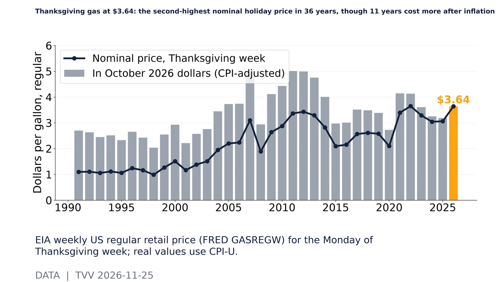
Thanksgiving gas at $3.64: the second-highest nominal holiday price in 36 years, though 11 years cost more after inflation. EIA weekly US regular retail price (FRED GASREGW) for the Monday of Thanksgiving week; real values use CPI-U. Source: https://fred.stlouisfed.org/series/GASREGW
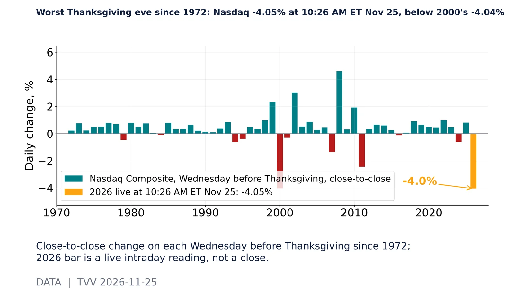
Worst Thanksgiving eve since 1972: Nasdaq -4.05% at 10:26 AM ET Nov 25, below 2000's -4.04%. Close-to-close change on each Wednesday before Thanksgiving since 1972; 2026 bar is a live intraday reading, not a close. Source: https://finance.yahoo.com/quote/%5EIXIC/history/
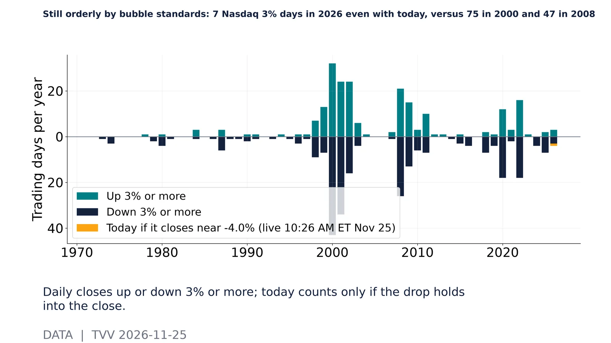
Still orderly by bubble standards: 7 Nasdaq 3% days in 2026 even with today, versus 75 in 2000 and 47 in 2008. Daily closes up or down 3% or more; today counts only if the drop holds into the close. Source: https://finance.yahoo.com/quote/%5EIXIC/history/
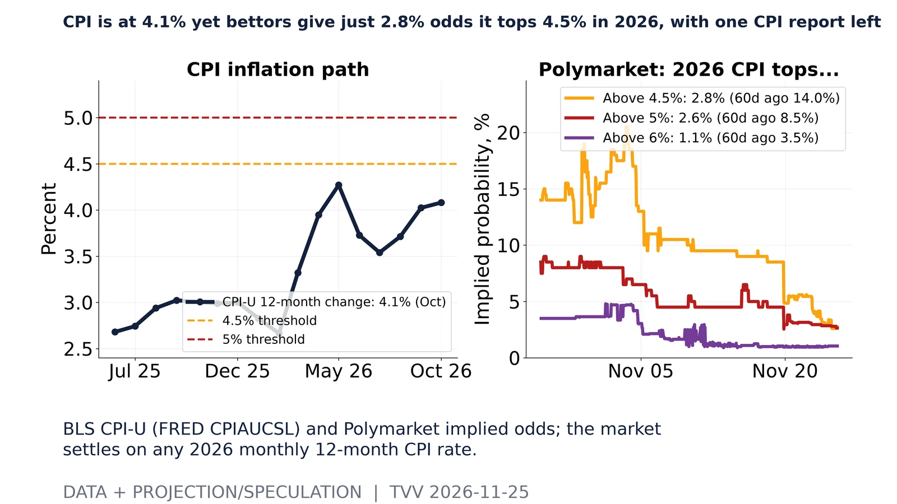
CPI is at 4.1% yet bettors give just 2.8% odds it tops 4.5% in 2026, with one CPI report left. BLS CPI-U (FRED CPIAUCSL) and Polymarket implied odds; the market settles on any 2026 monthly 12-month CPI rate. Source: https://polymarket.com/event/how-high-will-inflation-get-in-2026
Nvidia -40% from its Oct 6 peak in 36 trading days, a faster fall than the dot-com, 2008 and 2022 crashes. Nvidia path from each cycle peak close; the 2026 line ends with a live 10:26 AM ET Nov 25 quote. Only 2018 fell faster. Source: https://finance.yahoo.com/quote/NVDA/history/
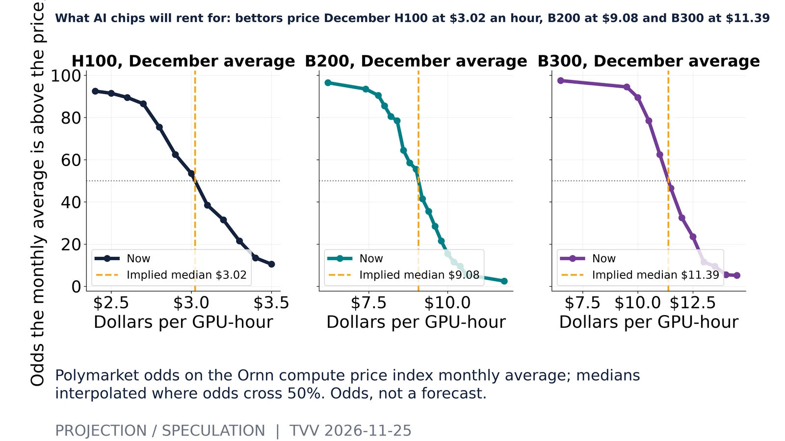
What AI chips will rent for: bettors price December H100 at $3.02 an hour, B200 at $9.08 and B300 at $11.39. Polymarket odds on the Ornn compute price index monthly average; medians interpolated where odds cross 50%. Odds, not a forecast. Source: https://polymarket.com/event/h100-average-rental-price-in-december-2026
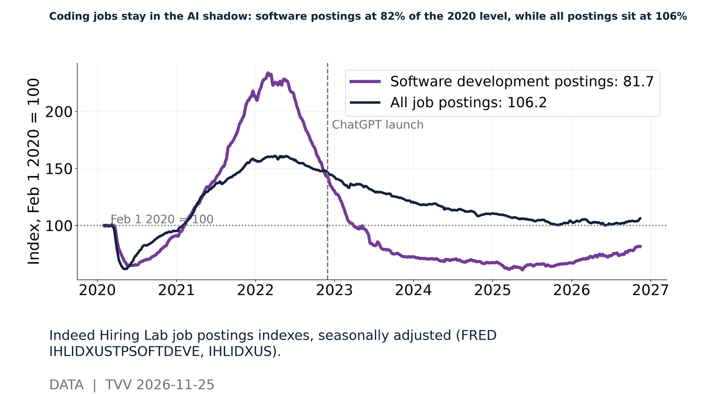
Coding jobs stay in the AI shadow: software postings at 82% of the 2020 level, while all postings sit at 106%. Indeed Hiring Lab job postings indexes, seasonally adjusted (FRED IHLIDXUSTPSOFTDEVE, IHLIDXUS). Source: https://fred.stlouisfed.org/series/IHLIDXUSTPSOFTDEVE
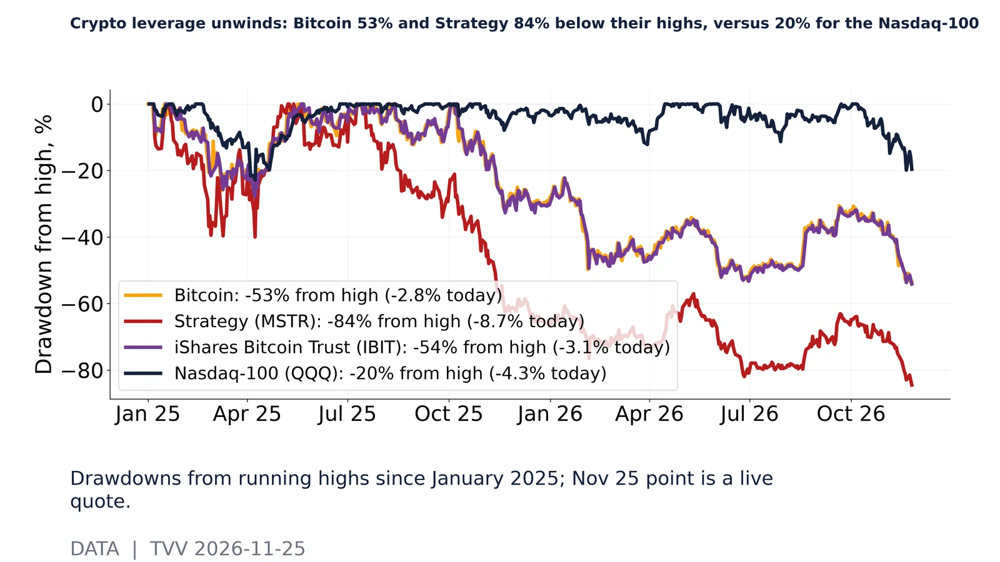
Crypto leverage unwinds: Bitcoin 53% and Strategy 84% below their highs, versus 20% for the Nasdaq-100. Drawdowns from running highs since January 2025; Nov 25 point is a live quote. Source: https://finance.yahoo.com/quote/BTC-USD
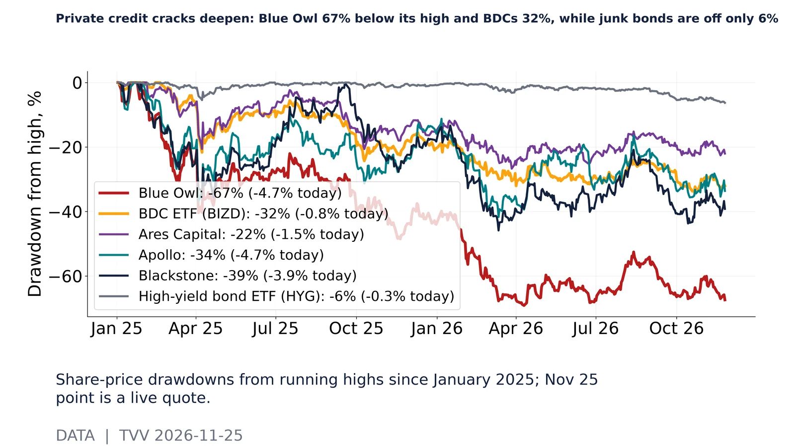
Private credit cracks deepen: Blue Owl 67% below its high and BDCs 32%, while junk bonds are off only 6%. Share-price drawdowns from running highs since January 2025; Nov 25 point is a live quote. Source: https://finance.yahoo.com/quote/OWL